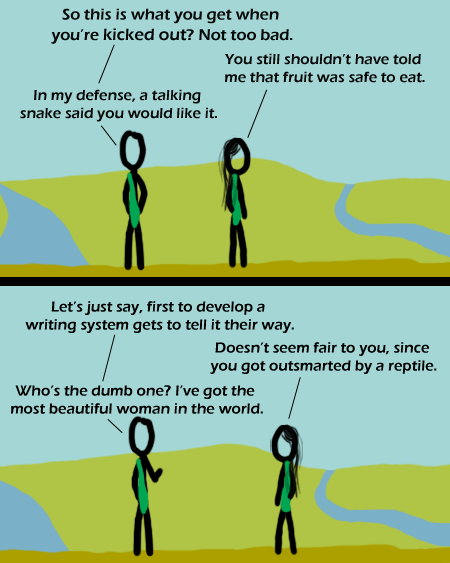

Comic JK 322
When I Feel Like It
⇤
<
?
>
⇥

⇤
<
?
>
⇥
Forum
.
RSS
.
Digg
.
Facebook
.
Reddit
.
Twitter
.
Stumbleupon
Enter your thoughts on number 322 here. Please, no spamming, trolling, or phreaking, or arguing about who's dumber. Cuneiform? >>Silly you. Google it! *hint* See Mesopotamia >>> writing sweet. intelligence is measured by the attractiveness of one's female partner. no wonder women are stupid. >so that must mean.... femme lesbians are the smartest people EVAR >>Herp derp, you mean dykes? Because femmes are the hot ones, not the ones with hot partners. Unless you are into butch women, in which case, I won't judge, but that is pretty homosex. At this point she is the ONLY female in the world smart one -Csana >this man is a poet >>I wish. What makes you think so? -Csana Is the cocaine troll on vacation? >he's the cocaine troll, when do you consider what he does work? >>the crystal meth troll is here to fill in though. >>>Cocaine troll got hooked on weed, now all he does is laze around. >>>> hooked on weed? how did he do that? >>>>>Laced it with meth. Cocaine troll is complicated. If you zoom in a tom the pixel in the bottom left corner has barney in it. At this zoom level hes the size of a quarter of a pixel. thats why u cant see any purple. >Ah, so that's where I left him! Thanks - I've been looking everywhere. >>Your welcome. Neo and the Oracle walk into a bar. There Is No Punchline.